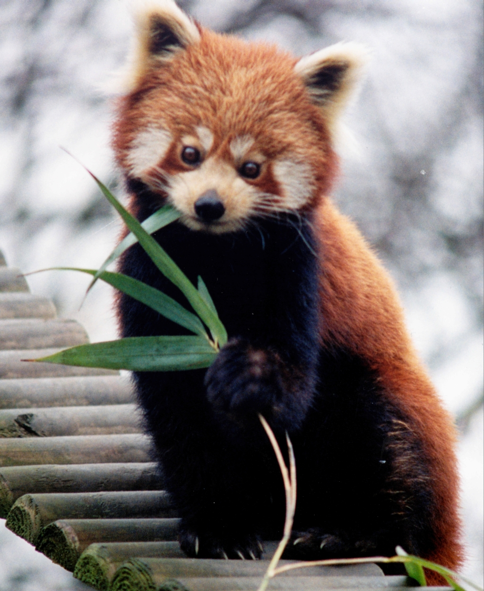
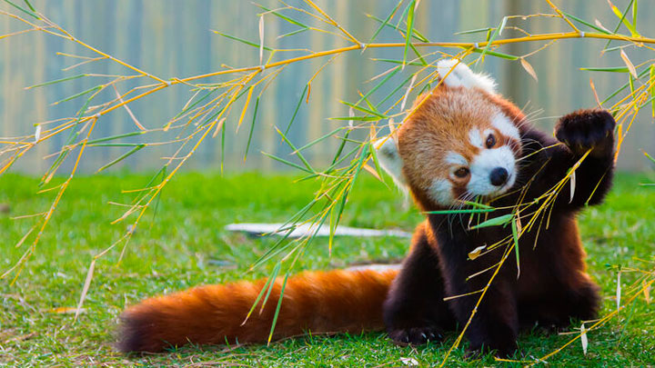
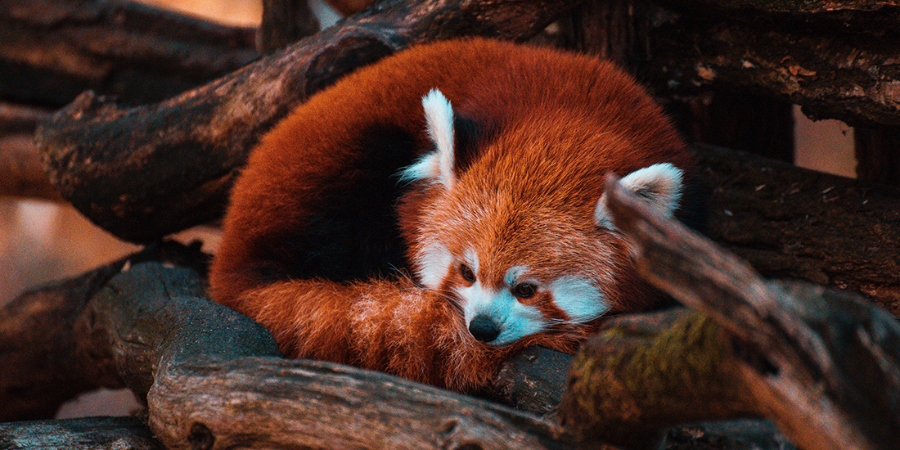

AILURUS FULGENS
 
El panda rojo ha llamado mucho la atención no solo por su ternura, sino que tambien gracias a RED, la película más reciente de Disney, para ver trailer pincha aqui. Tristemente es una especie que se encuentra en peligro de extinción y tiene unas características especiales que hoy te vamos a revelar en este contenido.
Presenta un brillante pelaje de color marrón-rojizo en todo el cuerpo y cola que contrasta con el negro de sus patas. En la cola se pueden distinguir 12 anillas bien definidas que alternan el color rojizo con el marrón. La cola no es prensil, y tan solo la usa para mantener el equilibrio al desplazarse por los árboles. De cara redondeada, muestra manchas blancas en el hocico, mejillas, sobre los ojos y en las orejas. Posee una gruesa capa de pelo lanoso bajo el pelaje y en la planta de los pies que le proporciona calor. El color de su pelaje le proporciona un perfecto camuflaje al moverse entre las ramas de los árboles, las cuales a veces presentan una capa de musgo de color marrón o rojizo, similar al color de su pelaje.
El panda rojo es eclipsado por el gigante blanco y negro con el que comparte nombre. Suele ser del tamaño del gato doméstico, aunque su cola grande y espesa añade 46 centímetros a su cuerpo. Utiliza su anillada cola como manta para arroparse en las frías cumbres de las montañas.
El panda rojo o panda menor (Ailurus fulgens) es una especie de mamífero omnívoro de la familia Ailuridae, aunque se había clasificado dentro de las familias de los prociónidos y de los úrsidos. Es la única especie del género Ailurus, y la única de la familia Ailuridae; se encuentra dentro de las especies en peligro de extinción, ya que sus poblaciones se encuentran amenazadas por la pérdida de hábitat, la caza furtiva y la endogamia; por ello están protegidos por las leyes nacionales de algunos países. Para información en datalle de por que este animal se encuentra en ésta situacion puedes acceder al siguiente sitio: ¿Por qué está el panda rojo en peligro de extinción?
Los pandas rojos son más activos al amanecer y la madrugada. Son sedentarios y durante el día descansan en las ramas y en los huecos de los árboles, aumentan su actividad solo por la tarde y / o la mañana. Son sensibles al calor, con una temperatura "de bienestar" entre 10 y 25 °C; no pueden tolerar temperaturas superiores a 25 °C en absoluto. Los pandas rojos deben dormir por lo tanto durante el mediodía en las partes superiores sombreadas de los árboles, a menudo, con los brazos estirados, o enrollado en cuevas; con su cola se puede cubrir su rostro.
Algo curioso es que al levantarse, limpian sus pelajes como lo hacen los gatos: lamiendo sus patas y frotando las partes de su cuerpo.
Te dejamos este pequeño video para que aprendas aun más de este hermoso animal! para ver solo pincha aqui